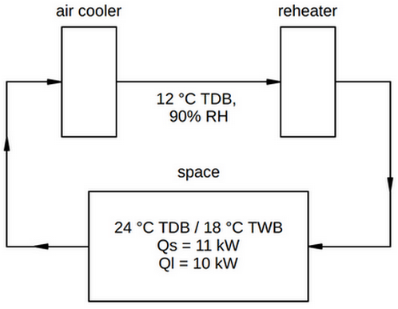
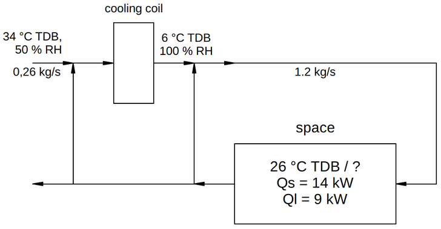
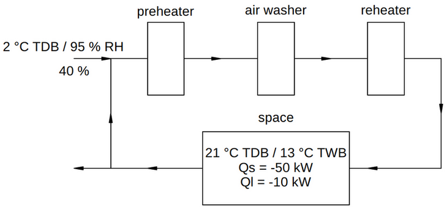

Combining Air Conditioning Processes
Contents
Combining Air Conditioning Processes#
This notebook further explores the use of the AirConditioningProcess class and the AdiabaticMixing class by solving a few sample exercises from the book Principles of Heating, Ventilation and Air Conditioning by Nihal E Wijeysundera (2016), Chapter 5, in which several air conditioning processes are combined.
First we import what we will need further on:
from hvac import Quantity
from hvac.fluids import HumidAir, Fluid
from hvac.charts import PsychrometricChart, StatePoint
from hvac.air_conditioning import AirConditioningProcess, AirStream, AdiabaticMixing
Q_ = Quantity
Water = Fluid('Water')
1. Adiabatic Mixing and Heating#
In a winter air conditioning system, outdoor air at 2°C and 20% relative humidity is mixed with return air at 23°C and 40% relative humidity. The ratio of the dry air mass flow rates of outdoor air to supply air is 1:4. The supply air is heated sensibly to a dry-bulb temperature of 35°C before being supplied to the space at the rate of 30 kg of dry air per minute. The pressure is constant at 101.3 kPa. Calculate (1) the wet-bulb temperature of the air after the mixing process, (2) the relative humidity of the air supplied to the space, and (3) the rate of heat input to the heater.
Outdoor air
dry-bulb temperature
Tdb= 2°Crelative humidity
RH= 20%
outdoor_air_state = HumidAir(Tdb=Q_(2.0, 'degC'), RH=Q_(20, 'pct'))
Return air
dry-bulb temperature
Tdb= 23°Crelative humidity
RH= 40%
return_air_state = HumidAir(Tdb=Q_(23.0, 'degC'), RH=Q_(40, 'pct'))
Dry air mass flow rates
outdoor air = 0.25 x 30.0 kg/min
return air = 0.75 x 30.0 kg/min
supply air = 30.0 kg/min
Adiabatic mixing
outdoor_air = AirStream(state=outdoor_air_state, m_da=Q_(0.25 * 30.0, 'kg / min'))
return_air = AirStream(state=return_air_state, m_da=Q_(0.75 * 30.0, 'kg / min'))
mixed_air = AirStream(m_da=Q_(30.0, 'kg / min'))
mixing_chamber = AdiabaticMixing(in1=outdoor_air, in2=return_air, out=mixed_air)
Mixed air at heating coil entrance
mixed_air_state = mixing_chamber.stream_out.state
ja.display_list([
f"wet-bulb temperature of supply air before heater= <b>{mixed_air_state.Twb.to('degC'):~P.1f}</b>"
])
- wet-bulb temperature of supply air before heater= 11.1 °C
Supply air at heating coil exit
dry-bulb temperature
Tdbof supply air after heater = 35°Csensible heating process: humidity ratio
Wremains constant
supply_air_state = HumidAir(Tdb=Q_(35.0, 'degC'), W=mixed_air_state.W)
ja.display_list([
f"relative humidity of supply air after heater= <b>{supply_air_state.RH.to('pct'):~P.0f}</b>"
])
- relative humidity of supply air after heater= 16 %
Heating coil
In a sensible heating process there is no water transfer to the air stream. Therefore, we can set the mass transfer of water m_w and the enthalpy of water h_w to zero.
heater = AirConditioningProcess(
air_in=mixed_air_state,
air_out=supply_air_state,
m_da=Q_(30.0, 'kg / min'),
m_w=Q_(0.0, 'kg / min'),
h_w=Q_(0.0, 'J / kg')
)
ja.display_list([
f"rate of heat input to the heater = <b>{heater.Q.to('kW'):~P.3f}</b>"
])
- rate of heat input to the heater = 8.797 kW
2. Adiabatic Mixing and Cooling#
In a summer air conditioning system, 25% of the return air from a space at 30°C dry-bulb (db) temperature, and 22°C wet-bulb (wb) temperature is exhausted and an equal quantity of fresh air at 34°C db-temperature, and 28°C wb-temperature is mixed with the remaining return air. The mixture passes over a cooling coil whose coil-surface temperature (apparatus dew-point) is 8°C and the bypass factor is 0.25. The mass flow rate of dry air to the space is 0.8 kg/s. The pressure is constant at 101.3 kPa. Calculate (1) db-temperature and the relative humidity of the air leaving the cooling coil, (2) enthalpy-humidity ratio of the cooling process, and (3) the refrigeration capacity of the cooling coil.
Return air
return_air_state = HumidAir(Tdb=Q_(30.0, 'degC'), Twb=Q_(22.0, 'degC'))
Outdoor air
outdoor_air_state = HumidAir(Tdb=Q_(34.0, 'degC'), Twb=Q_(28.0, 'degC'))
Dry air mass flow rates
supply air to space = 0.8 kg/s
outdoor air = 0.25 x 0.8 kg/s
return air = 0.75 x 0.8 kg/s
Adiabatic mixing
outdoor_air = AirStream(state=outdoor_air_state, m_da=Q_(0.25 * 0.8, 'kg / s'))
return_air = AirStream(state=return_air_state, m_da=Q_(0.75 * 0.8, 'kg / s'))
mixed_air = AirStream(m_da=Q_(0.8, 'kg / s'))
mixing_chamber = AdiabaticMixing(in1=outdoor_air, in2=return_air, out=mixed_air)
Mixed air state at cooling coil entrance
mixed_air_state = mixing_chamber.stream_out.state
Cooling coil
air_cooler = AirConditioningProcess(
air_in=mixed_air_state,
ADP=HumidAir(Tdb=Q_(8.0, 'degC'), RH=Q_(100.0, 'pct')),
beta=Q_(1.0 - 0.25, 'frac'), # contact-factor = 1 - bypass-factor
m_da=Q_(0.8, 'kg / s'),
h_w=Q_(0.0, 'J / kg') # we ignore the enthalpy of condensing water from the air stream
)
ja.display_list([
f"refrigeration capacity of the cooling coil = <b>{air_cooler.Q.to('kW'):~P.3f}</b>"
])
- refrigeration capacity of the cooling coil = -27.491 kW
Supply air state at cooling coil exit
supply_air = air_cooler.air_out
ja.display_list([
f"dry-bulb temperature of air leaving the cooler = <b>{supply_air.Tdb.to('degC'):~P.1f}</b>",
f"relative humidity of air leaving the cooler = <b>{supply_air.RH.to('pct'):~P.0f}</b>"
])
- dry-bulb temperature of air leaving the cooler = 13.8 °C
- relative humidity of air leaving the cooler = 90 %
Psychrometric chart
psych_chart = PsychrometricChart(fig_size=(8, 6))
psych_chart.plot_process(
name='adiabatic mixing',
start_point=StatePoint(outdoor_air.Tdb, outdoor_air.W),
end_point=StatePoint(return_air.Tdb, return_air.W),
mix_point=StatePoint(mixed_air.Tdb, mixed_air.W)
)
psych_chart.plot_process(
name='air cooler',
start_point=StatePoint(mixed_air.Tdb, mixed_air.W),
end_point=StatePoint(supply_air.Tdb, supply_air.W)
)
psych_chart.show()
3. Space Cooling#
The rate of sensible heat gain and the rate of moisture gain by a space are 23 kW and 0.0024 kg/s respectively. The space is maintained at 24°C db-temperature and 50 % relative humidity. The air supplied to the space is at a db-temperature of 15°C. Assume that the moisture entering the space has an enthalpy of 2555 kJ/kg. The pressure is constant at 101.3 kPa. Calculate (1) the relative humidity, the wb-temperature, and the dry air mass flow rate of air supplied, (2) the refrigeration capacity of the cooling coil, and (3) the bypass factor and the apparatus dew-point of the cooling coil.
Sensible and latent heat load of the room
Q_sen = Q_(23.0, 'kW')
The latent heat gain of the room can be approximated by \(Q_{lat} = m_w . h_{wg}\) wherein \(h_{wg}\) is the mean enthalpy of water vapor between 0 and 60 °C and equal to 2555 kJ/kg.
Q_lat = Q_(0.0024, 'kg / s') * Q_(2555, 'kJ / kg')
From the sensible and latent heat gain, the sensible heat ratio (SHR) of the room can be determined:
SHR = Q_sen / (Q_sen + Q_lat)
ja.display_list([
f"latent heat load of the room = <b>{Q_lat.to('kW'):~P.3f}</b>",
f"sensible heat ratio of the room = <b>{SHR.to('pct'):~P.3f}</b>"
])
- latent heat load of the room = 6.132 kW
- sensible heat ratio of the room = 78.951 %
Supply air dry-bulb temperature
T_sup = Q_(15.0, 'degC')
Room air = return air to cooler
return_air = HumidAir(Tdb=Q_(24.0, 'degC'), RH=Q_(50.0, 'pct'))
Space condition line
The SHR of the room determines the slope \(\Delta W / \Delta T\) of the “space condition line” in the psychrometric diagram. The state of the supply air must lie on this line in order to compensate the sensible and latent cooling load of the space. As the dry-bulb temperature of the supply air is given and the state of the room air is known, the equation of the space condition line can be solved for the missing humidity ratio of the supply air.
from hvac.air_conditioning import SpaceConditionLine
space_cond_line = SpaceConditionLine(
space_air=return_air,
Q_sen=Q_sen,
Q_lat=Q_lat
)
psych_chart = PsychrometricChart(fig_size=(8, 6))
psych_chart.plot_space_condition_line(
start_point=space_cond_line.start_point(),
end_point=space_cond_line.end_point(),
space_point=space_cond_line.space_point()
)
psych_chart.show()
From the sensible heat balance, also the mass flow rate of dry air m_da can be solved for, knowing the dry-bulb temperatures of supply and return air and the sensible heat load Q_sen of the room.
room = AirConditioningProcess(
T_ai=T_sup,
air_out=return_air,
SHR=SHR,
Q_sen=Q_sen
)
supply_air = room.air_in
m_da = room.m_da
ja.display_list([
f"relative humidity of air supplied = <b>{supply_air.RH.to('pct'):~P.0f}</b>",
f"wet-bulb temperature of air supplied = <b>{supply_air.Twb.to('degC'):~P.1f}</b>",
f"mass flow rate of dry air = <b>{m_da.to('kg / s'):~P.3f}</b>"
])
- relative humidity of air supplied = 79 %
- wet-bulb temperature of air supplied = 12.8 °C
- mass flow rate of dry air = 2.505 kg/s
Refrigeration capacity of the air cooler
The return air from the room enters the cooler and the supply air to the room leaves the cooler. We will ignore the enthalpy of the condensate in the cooler, so we set h_w to zero.
cooler = AirConditioningProcess(
air_in=return_air,
air_out=supply_air,
m_da=m_da,
h_w=Q_(0.0, 'J / kg')
)
ja.display_list([
f"refrigeration capacity of cooler = <b>{cooler.Q.to('kW'):~P.3f}</b>",
f"ADP of cooler = <b>{cooler.ADP.Tdb.to('degC'):~P.1f}, {cooler.ADP.W.to('g / kg'):~P.0f}</b>",
f"bypass factor of cooler = <b>{(1 - cooler.beta).to('pct'):~P.1f}</b>"
])
- refrigeration capacity of cooler = -29.149 kW
- ADP of cooler = 10.5 °C, 8 g/kg
- bypass factor of cooler = 33.6 %
Psychrometric chart
space_cond_line = SpaceConditionLine(
space_air=return_air,
Q_sen=Q_sen,
Q_lat=Q_lat
)
psych_chart = PsychrometricChart(fig_size=(8, 6))
psych_chart.plot_space_condition_line(
start_point=space_cond_line.start_point(),
end_point=space_cond_line.end_point(),
space_point=space_cond_line.space_point()
)
psych_chart.plot_process(
name='air cooler',
start_point=StatePoint(return_air.Tdb, return_air.W),
end_point=StatePoint(supply_air.Tdb, supply_air.W)
)
psych_chart.show()
4. Space Cooling with Reheat#
A summer air conditioning system, consisting of a cooling coil and a reheat coil, supplies air to a space maintained at 24°C db-temperature and 18°C wb-temperature. The sensible and latent heat loads on the space are 11 kW and 10 kW respectively. The conditions of the air leaving the cooling coil are 12°C db-temperature and 90% relative humidity. The pressure is constant at 101.3 kPa. Determine (1) the db-temperature and wb-temperature of the supply air, (2) the dry air mass flow rate of the air supplied, (3) the refrigeration capacity of the cooling coil, (4) the rate of heat input by the reheat coil, and (5) the bypass factor and apparatus dew-point of the cooling coil.

Space air
space_air = HumidAir(Tdb=Q_(24.0, 'degC'), Twb=Q_(18.0, 'degC'))
Sensible and latent heat load of space
Q_sen = Q_(11, 'kW')
Q_lat = Q_(10, 'kW')
SHR = Q_sen / (Q_sen + Q_lat)
Space condition line
space_cond_line = SpaceConditionLine(
space_air=space_air,
Q_sen=Q_sen,
Q_lat=Q_lat
)
psych_chart = PsychrometricChart(fig_size=(8, 6))
psych_chart.plot_space_condition_line(
start_point=space_cond_line.start_point(),
end_point=space_cond_line.end_point(),
space_point=space_cond_line.space_point()
)
psych_chart.show()
We note that the space condition line does not intersect the saturation line, while air cooling implies that the leaving air from the air cooler lies on a straight line that intersects the saturation line in the ADP of the air cooler.
Air cooler outlet
cooler_out = HumidAir(Tdb=Q_(12.0, 'degC'), RH=Q_(90.0, 'pct'))
State and mass flow rate of supply air to the space
The state of the space air (air_out) and the SHR of the space determine the “space condition line”. The supply air state must lie on this line to compensate for the sensible as well as the latent cooling load of the space. The humidity ratio of the entering supply air (W_ai) is known, as the humidity ratio of the air leaving the air cooler will remain constant through the reheat coil, which is a sensible heating process. From the equation of the space condition line, the unknown dry-bulb temperature of the supply air can be solved for. Putting this result in the sensible heat balance of the space, will give us also the required mass flow rate of supply air, as we know the sensible heat load (Q_sen) of the space.
space_cond_line = SpaceConditionLine(
space_air=space_air,
Q_sen=Q_sen,
Q_lat=Q_lat
)
psych_chart = PsychrometricChart(fig_size=(8, 6))
psych_chart.plot_space_condition_line(
start_point=space_cond_line.start_point(),
end_point=space_cond_line.end_point(),
space_point=space_cond_line.space_point()
)
psych_chart.plot_line(
name='line',
start_point=StatePoint(Q_(0, 'degC'), cooler_out.W),
end_point=StatePoint(Q_(50, 'degC'), cooler_out.W)
)
psych_chart.show()
space = AirConditioningProcess(
air_out=space_air,
W_ai=cooler_out.W,
SHR=SHR,
Q_sen=Q_sen
)
supply_air = space.air_in
m_da = space.m_da
ja.display_list([
f"dry-bulb temperature of supply air to space = <b>{supply_air.Tdb.to('degC'):~P.1f}</b>",
f"wet-bulb temperature of supply air to space = <b>{supply_air.Twb.to('degC'):~P.1f}</b>",
f"mass flow rate of dry air = <b>{m_da.to('kg / s'):~P.3f}</b>"
])
- dry-bulb temperature of supply air to space = 16.8 °C
- wet-bulb temperature of supply air to space = 13.1 °C
- mass flow rate of dry air = 1.502 kg/s
We note that the required supply air db-temperature is higher than the db-temperature of the air leaving the air cooler.
Air cooler
cooler = AirConditioningProcess(
air_in=space_air,
air_out=cooler_out,
m_da=m_da,
h_w=Q_(0.0, 'J / kg')
)
ja.display_list([
f"refrigeration capacity of air cooler = <b>{cooler.Q.to('kW'):~P.3f}</b>",
f"apparatus dew-point of cooling coil = <b>{cooler.ADP.Tdb.to('degC'):~P.1f}</b>",
f"bypass factor of air cooler = <b>{1 - cooler.beta.to('frac'):~P.2f}</b>"
])
- refrigeration capacity of air cooler = -28.358 kW
- apparatus dew-point of cooling coil = 9.3 °C
- bypass factor of air cooler = 0.19
Reheat coil
We need to heat the air leaving the air cooler to the required supply air db-temperature.
reheater = AirConditioningProcess(
air_in=cooler_out,
air_out=supply_air,
m_da=m_da,
h_w=Q_(0.0, 'J / kg')
)
ja.display_list([
f"rate of heat input by the reheat coil = <b>{reheater.Q.to('kW'):~P.3f}</b>"
])
- rate of heat input by the reheat coil = 7.385 kW
Check the overall energy balance
The sum of heat removed from the system by the cooling coil and the energy supplied by the reheating coil should balance the total heat load on the space (= Q_sen + Q_lat).
ja.display_list([
f"Net heat removed from the system = <b>{cooler.Q.to('kW') + reheater.Q.to('kW'):~P.3f}</b>"
])
- Net heat removed from the system = -20.973 kW
Psychrometric chart
psych_chart = PsychrometricChart(fig_size=(8, 6))
psych_chart.plot_process(
name='room',
start_point=StatePoint(supply_air.Tdb, supply_air.W),
end_point=StatePoint(space_air.Tdb, space_air.W),
)
psych_chart.plot_process(
name='air cooler',
start_point=StatePoint(space_air.Tdb, space_air.W),
end_point=StatePoint(cooler_out.Tdb, cooler_out.W)
)
psych_chart.plot_process(
name='reheater',
start_point=StatePoint(cooler_out.Tdb, cooler_out.W),
end_point=StatePoint(supply_air.Tdb, supply_air.W)
)
psych_chart.show()
5. Space Cooling with Ventilation and Return Air Bypass#
An air conditioning system supplying air to a space with a sensible heat load of 14 kW and a latent heat load of 9 kW has a cooling coil and a bypass path downstream of the cooling coil for direct recirculation of return air back to the space. The db-temperature of the space is maintained at 26°C. The dry air mass flow rate of supply air is 1.2 kg/s. Outdoor ventilation air at 34°C db-temperature and 50 % relative humidity is introduced into the system with a dry air mass flow rate of 0.26 kg/s. The air leaving the cooling coil is fully saturated at a db-temperature of 6°C. The pressure is constant at 101.3 kPa. Determine (1) db-temperature and relative humidity of the supply air to the space, (2) the wb-temperature of the space, (3) the temperature of the air entering the cooling coil, and (4) the refrigeration capacity of the cooling coil.

Sensible and latent heat load of the space
Q_sen = Q_(14.0, 'kW')
Q_lat = Q_(9.0, 'kW')
SHR = Q_sen / (Q_sen + Q_lat)
Dry air mass flow rate of supply air to the space
m_da_sup = Q_(1.2, 'kg / s')
Dry-bulb temperature of space air (return air)
T_ret = Q_(26.0, 'degC')
State of outdoor ventilation air and mass flow rate of ventilation air
ven_air = HumidAir(Tdb=Q_(34.0, 'degC'), RH=Q_(50, 'pct'))
m_da_ven = Q_(0.26, 'kg / s')
State of air leaving the cooling coil
cooler_out_air = HumidAir(Tdb=Q_(6.0, 'degC'), RH=Q_(100, 'pct'))
State of space air (return air)
The state of the supply air to the room is determined by adiabatic mixing of cooled air from the cooling coil with return air that comes from the bypass path. In the psychrometric diagram the process of adiabatic mixing is represented by a straight line. The state of the supply air lies somewhere on this straight line that connects the state of the air at the cooler outlet (which is known: cooler_out_air) with the state of the return air (of which only the dry-bulb temperature T_ret is known).
In the psychrometric diagram the state of the supply air to the space and the state of the return air from the space also lie on a straight line, the space condition line, of which the slope is determined by the SHR of the room (which is known: SHR).
It then follows that the line of adiabatic mixing and the space condition line must coincide and have the same slope. This fact can now be used to find the complete thermodynamic state of the return air. For this we consider an air conditioning process of which the entering air is the air at the cooler outlet cooler_out_air, the slope of its condition line is determined by SHR, and the dry-bulb temperature of the leaving air is T_ret. With this input data the full state of the return air can be calculated from the equation of the space condition line.
p1 = AirConditioningProcess(
air_in=cooler_out_air,
T_ao=T_ret,
SHR=SHR
)
return_air = p1.air_out
ja.display_list([
f"wet-bulb temperature of room air = <b>{return_air.Twb.to('degC'):~P.1f}</b>"
])
- wet-bulb temperature of room air = 19.0 °C
State of supply air
With the state of the return air known, the state of the supply air can now be calculated from the sensible and latent heat balance of the room. The enthalpy of water h_w in the latent heat balance will be ignored.
p2 = AirConditioningProcess(
air_out=return_air,
m_da=m_da_sup,
Q_sen=Q_sen,
Q_lat=Q_lat,
h_w=Q_(0.0, 'J / kg')
)
supply_air = p2.air_in
ja.display_list([
f"dry-bulb temperature of supply air = <b>{supply_air.Tdb.to('degC'):~P.1f}</b>",
f"relative humidity of supply air = <b>{supply_air.RH.to('pct'):~P.0f}</b>"
])
- dry-bulb temperature of supply air = 14.6 °C
- relative humidity of supply air = 77 %
Air mass flow rates through the cooling coil and the bypass path
At the mixing point of the cooling coil outlet and the bypass path, the state of the three air streams and the mass flow rate of only the mixed output stream, i.e. the supply air to the room, are known. With these input data the mass flow rates through the cooling coil and through the bypass path can be calculated.
bypass_stream = AirStream(state=return_air)
cooler_out_stream = AirStream(state=cooler_out_air)
supply_stream = AirStream(state=supply_air, m_da=m_da_sup)
mix1 = AdiabaticMixing(
in1=bypass_stream,
in2=cooler_out_stream,
out=supply_stream
)
ja.display_list([
f"mass flow rate of dry air through bypass = <b>{bypass_stream.m_da.to('kg / s'):~P.3f}</b>",
f"mass flow rate of dry air through cooler = <b>{cooler_out_stream.m_da.to('kg / s'):~P.3f}</b>"
])
- mass flow rate of dry air through bypass = 0.514 kg/s
- mass flow rate of dry air through cooler = 0.686 kg/s
Mass flow rate of recirculated return air upstream of the air cooler
The mass flow rate of dry air at the cooler outlet is also the mass flow rate of return air that flows towards the cooler inlet. However, part of this air is also exhausted to the outside. From the problem statement it follows that 0.26 kg/s is exhausted to the outside (exhaust rate equals outdoor ventilation intake rate, as dictated by the law of conservation of mass at steady-state).
m_da_exh = m_da_ven
The mass flow rate of recirculated return air that flows to the mixing chamber upstream of the cooling coil is then:
m_da_rec = cooler_out_stream.m_da - m_da_exh
Adiabatic mixing of return air and ventilation air at cooler inlet
recirculated_stream = AirStream(state=return_air, m_da=m_da_rec)
ventilation_stream = AirStream(state=ven_air, m_da=m_da_ven)
cooler_in_stream = AirStream(m_da=cooler_out_stream.m_da)
mix2 = AdiabaticMixing(
in1=recirculated_stream,
in2=ventilation_stream,
out=cooler_in_stream
)
cooler_in_air = mix2.stream_out.state
ja.display_list([
f"temperature of the air entering the cooling coil = <b>{cooler_in_air.Tdb.to('degC'):~P.1f}</b>"
])
- temperature of the air entering the cooling coil = 29.0 °C
Refrigeration capacity of cooling coil
cooler = AirConditioningProcess(
air_in=cooler_in_air,
air_out=cooler_out_air,
m_da=cooler_out_stream.m_da,
h_w=Q_(0.0, 'J / kg')
)
ja.display_list([
f"refrigeration capacity of cooling coil = <b>{cooler.Q.to('kW'):~P.3f}</b>"
])
- refrigeration capacity of cooling coil = -28.993 kW
Checking the overall energy balance of the system
Sensible and latent heat gains are added to the system in the room.
Heat is added to the system by the outdoor ventilation air. This air must be cooled to room air conditions = ventilation load.
Heat is extracted from the system in the cooling coil.
At steady-state the total heat added to the system must equal the total heat extracted from the system.
The ventilation load can be determined as follows:
h_i = ventilation_stream.state.h
h_f = return_air.h
Q_ven = m_da_ven * (h_i - h_f)
ja.display_list([
f"ventilation load = <b>{Q_ven.to('kW'):~P.3f}</b>"
])
- ventilation load = 6.074 kW
The total heat gain of the system can be determined as:
Q_gain = Q_sen + Q_lat + Q_ven
ja.display_list([
f"total heat gain of the system = <b>{Q_gain.to('kW'):~P.3f}</b>"
])
- total heat gain of the system = 29.074 kW
It follows that the calculated refrigeration capacity of the cooling coil approximates the total heat gain of the system closely.
6. Space Heating and Humidification#
A winter air conditioning system has a preheat coil, an air washer and a reheat coil as processing units. It supplies air at 38°C db-temperature to a space maintained at 21°C db-temperature and 13°C wb-temperature. The sensible and latent heat loads on the space are 50 kW and 10 kW respectively. Of the return air from the space, 40% by dry air mass is discharged to the ambient and replaced with fresh outdoor air at 2°C db-temperature and 95% relative humidity. In the preheater, the air is heated to a db-temperature of 21°C. Assume that the water added in the air washer is at the wb-temperature of the air entering it. The pressure is constant at 101.3 kPa. Determine (1) mass flow rate of supply air, (2) the rates of heat input in the preheat coil and the reheat coil, (3) the mass flow rate of water in the air washer, and (4) the saturation effectiveness of the air washer.

Space
space_air = HumidAir(Tdb=Q_(21, 'degC'), Twb=Q_(13, 'degC'))
Q_sen = Q_(-50, 'kW')
Q_lat = Q_(-10, 'kW')
Select a supply air temperature
T_supply = Q_(38, 'degC')
Calculate required mass flow rate of supply air and find required state of supply air to meet space loads
space = AirConditioningProcess(
T_ai=T_supply,
air_out=space_air,
Q_sen=Q_sen,
Q_lat=Q_lat
)
m_supply = space.m_da
supply_air = space.air_in
ja.display_list([
f"mass flow rate of supply air: {m_supply.to('kg / s'):~P.3f}",
f"supply air: {supply_air.Tdb.to('degC'):~P.1f}, {supply_air.W.to('g / kg'):~P.0f}"
])
- mass flow rate of supply air: 2.884 kg/s
- supply air: 38.0 °C, 7 g/kg
Adiabatic mixing of return air with outdoor air
return_air = space_air
outdoor_air = HumidAir(Tdb=Q_(2, 'degC'), RH=Q_(95, 'pct'))
ra_stream = AirStream(state=return_air, m_da=0.6 * m_supply)
oa_stream = AirStream(state=outdoor_air, m_da=0.4 * m_supply)
sa_stream = AirStream(m_da=m_supply)
mixing_chamber = AdiabaticMixing(
in1=ra_stream,
in2=oa_stream,
out=sa_stream
)
mixed_air = mixing_chamber.stream_out.state
ja.display_list([
f"mixed air: {mixed_air.Tdb.to('degC'):~P.1f}, {mixed_air.W.to('g / kg'):~P.0f}"
])
- mixed air: 13.4 °C, 5 g/kg
Preheater: heat the mixed air to space temperature
preheater = AirConditioningProcess(
air_in=mixed_air,
air_out=HumidAir(Tdb=Q_(21, 'degC'), W=mixed_air.W),
m_da=m_supply
)
preheated_air = preheater.air_out
ja.display_list([
f"preheater load: {preheater.Q.to('kW'):~P.3f}",
f"preheated air: {preheated_air.Tdb.to('degC'):~P.1f}, {preheated_air.W.to('g / kg'):~P.0f}"
])
- preheater load: 22.353 kW
- preheated air: 21.0 °C, 5 g/kg
Air washer: increase the humidity ratio to the desired level of the supply air
Water = Fluid('Water')
make_up_water = Water(T=preheated_air.Twb, P=Q_(101.3, 'kPa'))
air_washer = AirConditioningProcess(
air_in=preheated_air,
W_ao=supply_air.W,
m_da=m_supply,
Q=Q_(0, 'W'),
h_w=make_up_water.h
)
humidified_air = air_washer.air_out
ja.display_list([
f"mass flow rate of water in air washer: {air_washer.m_w.to('kg / s'):~P.3f}",
f"saturation effectiveness of air washer: {air_washer.beta.to('pct'):~P.0f}",
f"humidified air: {humidified_air.Tdb.to('degC'):~P.1f}, {humidified_air.W.to('g / kg'):~P.0f}"
])
- mass flow rate of water in air washer: 0.006 kg/s
- saturation effectiveness of air washer: 59 %
- humidified air: 15.8 °C, 7 g/kg
Reheater: heats the air to the required supply air temperature
reheater = AirConditioningProcess(
air_in=air_washer.air_out,
air_out=supply_air,
m_da=m_supply
)
ja.display_list([
f"reheater load: {reheater.Q.to('kW'):~P.3f}",
f"supply air: {supply_air.Tdb.to('degC'):~P.1f}, {supply_air.W.to('g / kg'):~P.0f}"
])
- reheater load: 65.323 kW
- supply air: 38.0 °C, 7 g/kg
Psychrometric chart
psych_chart = PsychrometricChart(fig_size=(8, 6))
psych_chart.plot_process(
name='mixing chamber',
start_point=StatePoint(return_air.Tdb, return_air.W),
end_point=StatePoint(outdoor_air.Tdb, outdoor_air.W),
mix_point=StatePoint(mixed_air.Tdb, mixed_air.W)
)
psych_chart.plot_process(
name='preheater',
start_point=StatePoint(mixed_air.Tdb, mixed_air.W),
end_point=StatePoint(preheated_air.Tdb, preheated_air.W)
)
psych_chart.plot_process(
name='air washer',
start_point=StatePoint(preheated_air.Tdb, preheated_air.W),
end_point=StatePoint(humidified_air.Tdb, humidified_air.W)
)
psych_chart.plot_process(
name='reheater',
start_point=StatePoint(humidified_air.Tdb, humidified_air.W),
end_point=StatePoint(supply_air.Tdb, supply_air.W)
)
psych_chart.plot_process(
name='space',
start_point=StatePoint(supply_air.Tdb, supply_air.W),
end_point=StatePoint(return_air.Tdb, return_air.W)
)
psych_chart.show()